StatsD and Graphite
Prepared for: Appboy
Table of Contents
- Overview of Graphite and StatsD
- Use Cases
- The StatsD UDP Packet
- The Graphite Web Interface
- Intro to Graphite Functions
- Deconstruction
- Gotchas
Graphite in a nutshell
StatsD
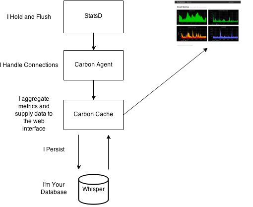Powerful Functions
http://graphite01.mattjbarlow.com/render?
from=-12hour&
until=now&
width=800&
height=250&
target=stats_counts.keystroke&
lineMode=connected&
target=drawAsInfinite(events
("Pomodoro")))
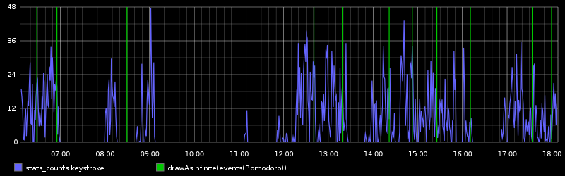
Sums and Histograms
Overlays
Easy In and Easy Out
- POST Events
- Realtime
- JSON, RAW, and CSV Output
- JSONP Support
- Dozens of Community Tools
StatsD Libraries
- Client Libraries in Every Language
- No TCP Overhead
- Nice Telnet Management Console
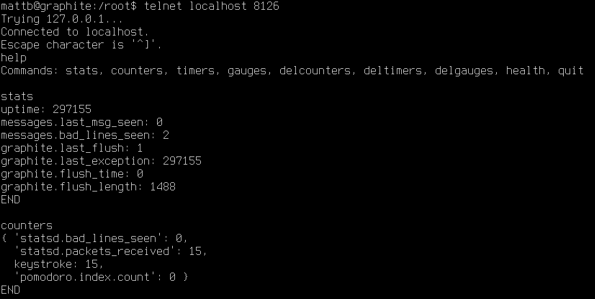
Challenges
- Steep Learning Curve
- Lots of dependencies
- Gotchas Can Bite You Too Late
- Write Intensive
- Web Interface Usability and Auth
Metric Types
Raw Graphite: metric_path value timestamp\n:
foo.bar.baz 42 74857843
Counters:
StatsClient().incr(stat, count=1, rate=1)
'stats.' + key + ' ' + valuePerSecond + ' ' + ts + "\n";
'stats_counts.' + key + ' ' + value + ' ' + ts + "\n";
Timers
StatsClient().timing(stat, delta, rate=1)
Gauges
StatsClient().gauge(stat, value, rate=1, delta=False)
Counter Example
c = StatsClient(host=secrets.GRAPHITE_URL, port=8126, prefix=None)
c.incr('keystroke', count=1, rate=1)
Timer Example
def self.query(search_item="pizza")
starttime = Time.now
result = Twitter.search(search_item, :count => 10, :result_type => "recent").results.first
tweettime = ((Time.now - starttime) * 1000).to_i
METRICS.timing('tweetsearch.query', tweettime)
return result
end
Gauge Example
ps = subprocess.Popen(('ps', 'aux'), stdout=subprocess.PIPE)
output = subprocess.check_output(('wc', '-l'), stdin=ps.stdout)
output = re.match(r'(?:^\s*)(\d.*$)', output).group(1)
c = statsd.StatsClient('STATSD_SERVER_IP', 8125)
c.gauge('{}.processes'.format(args.servername), output)
Use Cases
- Performance Measurement
- Team Metrics
- Alerting
Performance Data
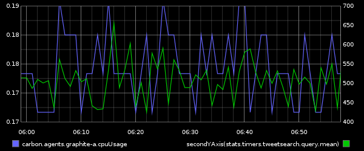
- Workload Performance
- Resource Performance
- Benchmarking
Quantified Teams
- Push Events
- Build Failures
- Pull Requests
- Code Coverage
- C.I. Events
Alerting
- Nagios
- Sensu
- Cloud Monitoring
- Protip: Use keepLastValue()
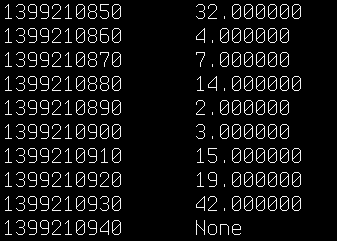
Python Keystroke Counter
Keystrokes Per Second
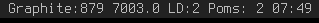Key Counter Code
c = StatsClient(host=secrets.GRAPHITE_URL, port=8126, prefix=None)
dev = InputDevice('/dev/input/event0')
for event in dev.read_loop():
if event.type == ecodes.EV_KEY:
if event.value == 01:
c.incr('keystroke', count=1, rate=1)
Security
- Bind Django and Carbon to private IP [0]
- Most people run StatsD on each application server
- Set the Graphite Admin password [1]
- Use HTTP Authentication to protect /opt/graphite/webapp
- Use IPTables to restrict access to carbon and StatsD ports
[0] update LINE_RECEIVER_INTERFACE in carbon.conf for ports 2003 and 2004
[1] python manage.py changepassword root
Tracing A UDP Packet
- echo "testupd:1|c" | nc -w 1 -u SERVER_URL 8125
- Log into server and telnet localhost 8126
- Type "counters" to see your testudp counter
- When it goes away, use whisper-fetch.py to find it in the database
Tracing the UDP Packet
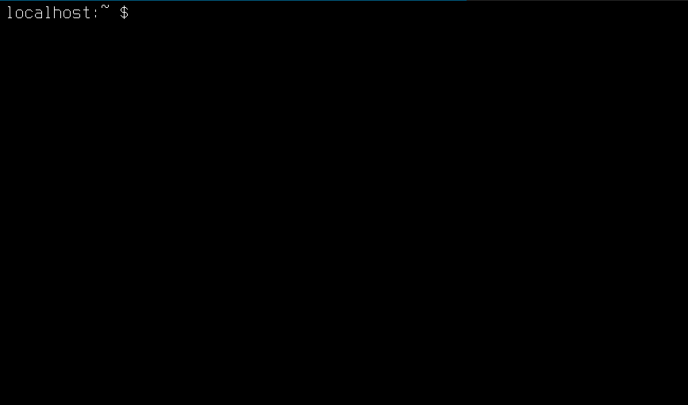The Graphite Dashboard
- The GUI
- Adding Functions
- Saving Dashboards
- Right Click and View Image
- Manipulate URL
- Bookmark Graphs
- Create Your Dashboard Page
The GUI
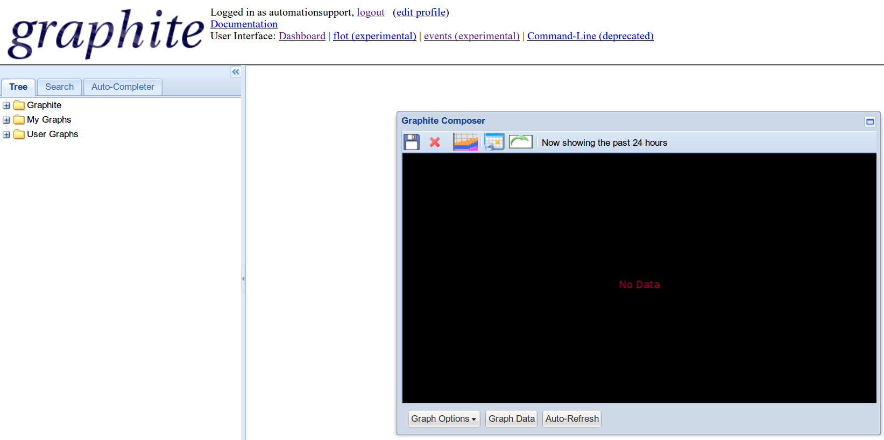
Adding Functions
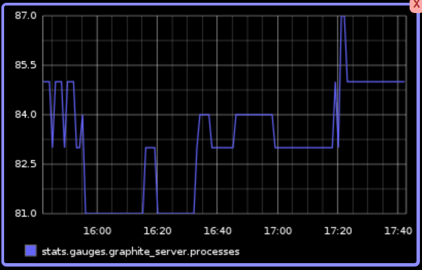
Saving Your Dashboard
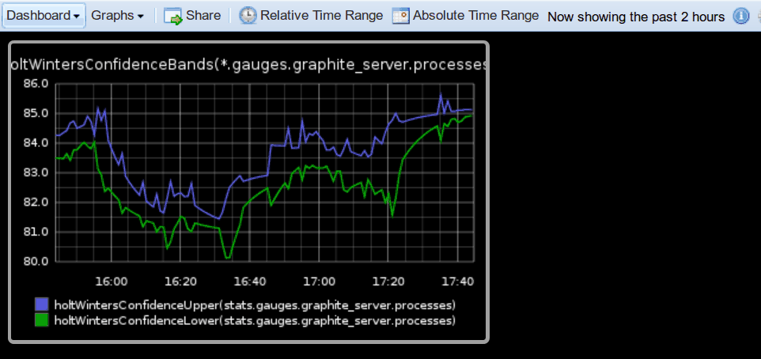
Viewing The Image
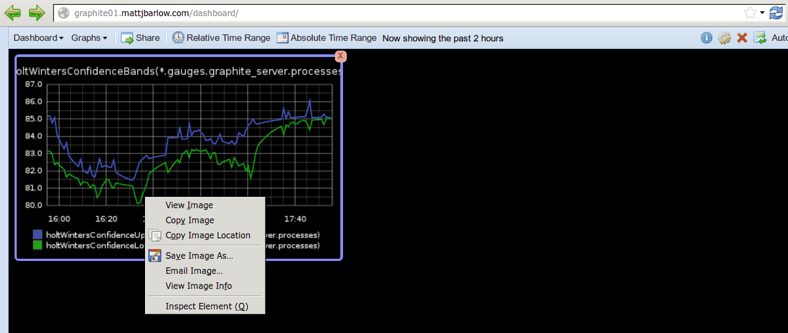
graphiteurl.com
Programming in the URL Bar :(
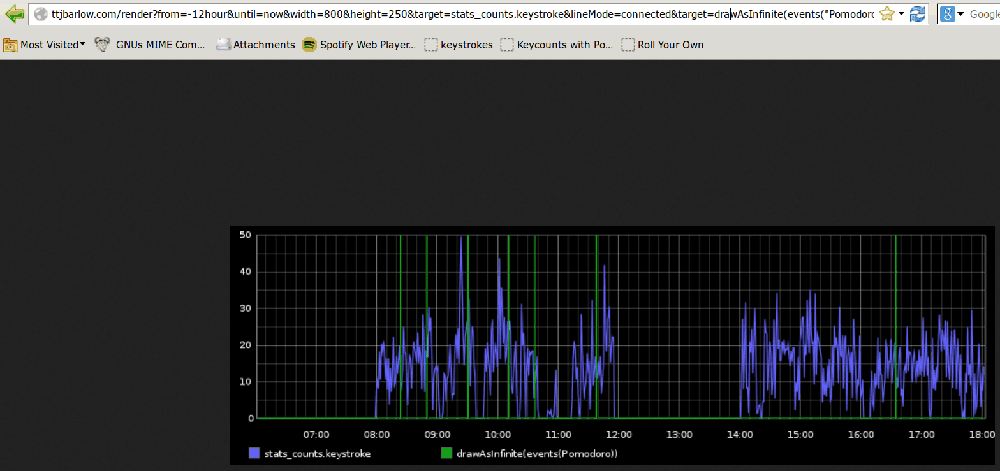
graphiteurl.com
This web tool makes it easier :)
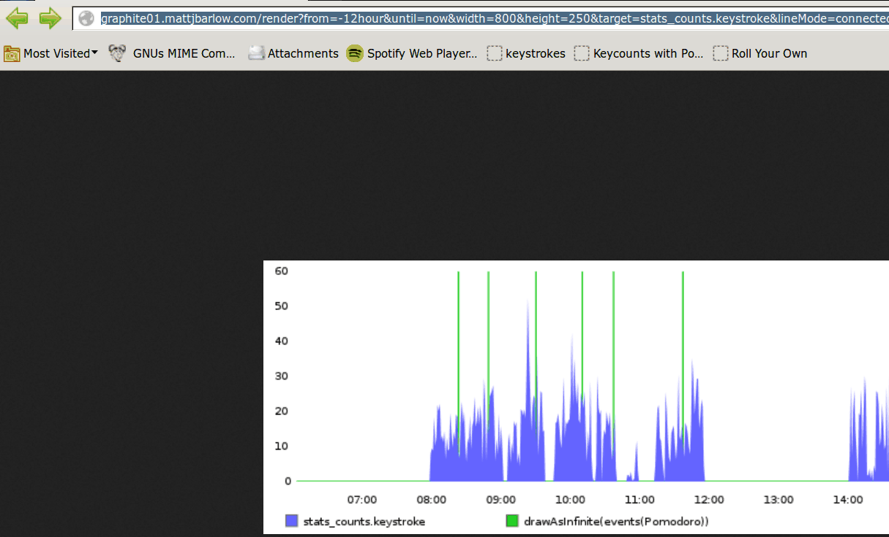
Common Graphite Functions
- alias()
- movingAverage()
- secondYAxis()
- timeShift()
- drawAsInfinite()
- hitcount()
- integral() and derivitive()
Alias Function
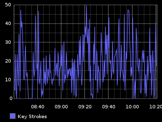
&target=alias(stats_counts.keystroke, "Key Strokes")
secondYAxis Function
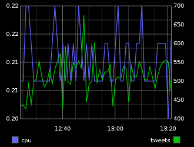
&target=alias(*.agents.graphite-a.cpuUsage, "cpu")& target=alias(secondYAxis(*.timers.tweetsearch.query.mean), "tweets")
drawAsInfinite
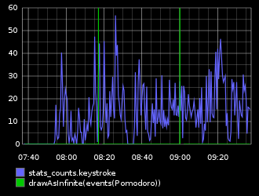
&target=stats_counts.keystroke&lineMode=connected&target=drawAsInfinite(events("Pomodoro"))
Timeshift
- timeShift() image
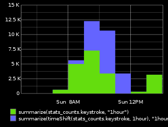
&target=color(summarize(stats_counts.keystroke%2C'1hour')%2C'64DD0E')& areaMode=stacked&lineMode=staircase& target=summarize(timeShift(stats_counts.keystroke%2C'1hour)%2C'1hour')& areaMode=stacked& lineMode=staircase& target=summarize(timeShift(stats_counts.keystroke%2C'1hour')%2C'1hour')& areaMode=stacked& lineMode=staircase
Getting More Data into Graphite
- CollectD
- Sending Events with Curl
- Python snippet
- Ruby snippet
- Phantomas
- Rails Nunes gem
CollectD
apt-get install collectd
#/etc/collectd/collectd.conf
LoadPlugin write_graphite
Host "localhost"
Port "2003"
Protocol "udp"
LogSendErrors true
Prefix "collectd."
StoreRates true
AlwaysAppendDS false
EscapeCharacter "_"
CollectD Generates Graphs
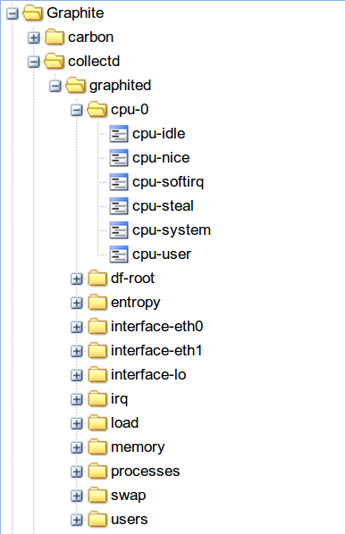Curl
curl -X POST http://GRAPHITE_URL/events/ \
-d '{"what": "Ansible Jekyll Role", "tags": "Playbook"}''
drawAsInfinite(events("Playbook"))
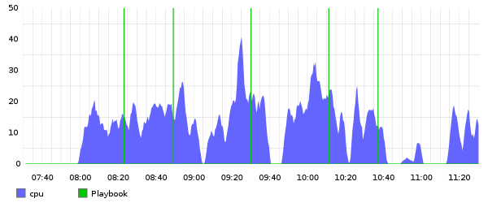
Python
import argparse
parser = argparse.ArgumentParser(description='Send num processes to StatsD')
parser.add_argument('servername', metavar='S', type=str,
help='The server that is generating this process list.')
args = parser.parse_args()
ps = subprocess.Popen(('ps', 'aux'), stdout=subprocess.PIPE)
output = subprocess.check_output(('wc', '-l'), stdin=ps.stdout)
output = re.match(r'(?:^\s*)(\d.*$)', output).group(1)
c = statsd.StatsClient('STATSD_URL', 8125)
c.gauge('{}.processes'.format(args.servername), output)
print output
Ruby
def self.query(search_item="pizza")
starttime = Time.now
result = Twitter.search(search_item, :count => 10, :result_type => "recent").results.first
tweettime = ((Time.now - starttime) * 1000).to_i
METRICS.timing('tweetsearch.query', tweettime)
return result
end
Phantomas
114 website metrics
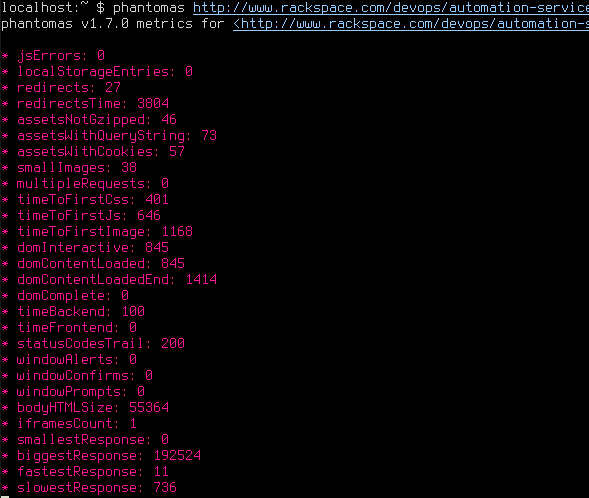
Events Page In Graphite
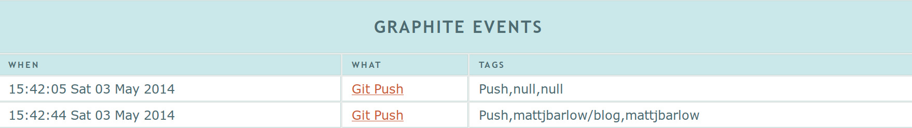
Also creates:
target=stats.gauges.push.mattjbarlow.mattjbarlow-blog
Historical Data
TCP_IP = 'CARBON_IP'
TCP_PORT = 2003
github_user = ''
events_url = 'https://api.github.com/users/' + github_user + '/events'
r = requests.get(events_url)
for i in r.json():
if i['type'] == 'PushEvent':
git_time = i['created_at']
dt = time.strptime(git_time, "%Y-%m-%dT%H:%M:%SZ")
timestamp = time.mktime(dt)
s = socket.socket()
s.connect((TCP_IP, TCP_PORT))
message = "github.{}.{} 1 {}\n".format(i['actor']['login'],i['repo']['name'], \
int(timestamp))
print message
s.sendall(message)
s.close()
Nunes Gem
Subscribes to Rails instrumentation events and sends them to StatsD.
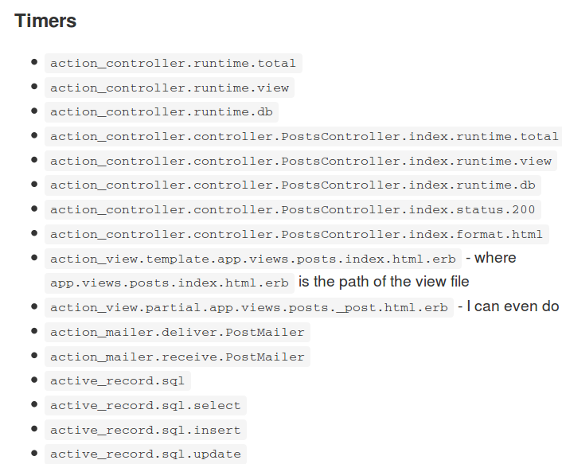
Deconstruction
- Graphite
- StatsD
- Gotchas
RRD Database Structure

Circular Buffer means Fixed Size
Graphite Directory Overview
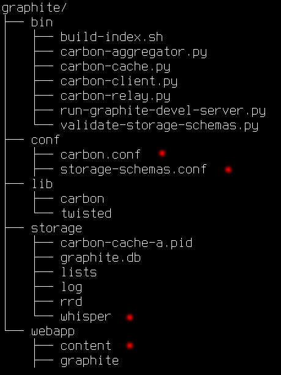storage-schemas.conf
Lives in /opt/graphite/conf
[stats]
priority = 110
pattern = ^stats\..*
retentions = 10s:6h,1m:7d,10m:1y
storage-aggregation.conf
Lives in /opt/graphite/conf
[default_average]
pattern = .*
xFilesFactor = 0.5
aggregationMethod = average
The Whisper Databases
In /opt/graphite/storage/whisper
drwxr-xr-x 3 root root 4096 May 3 14:17 carbon
drwxr-xr-x 4 root root 4096 May 3 14:18 stats
drwxr-xr-x 3 root root 4096 May 3 14:18 stats_counts
drwxr-xr-x 2 root root 4096 May 3 14:18 statsd
graphite/storage/whisper/carbon/agents/graphited01-a/metricsReceived.wsp
http://graphite.example.com/render?target=carbon.agents.graphite01-a.metricsReceived
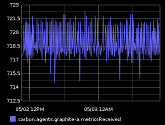
Graphite Startup
Start carbon:
/opt/graphite/bin/carbon-cache.py start --logdir=/var/log/carbonStart django:
python /opt/graphite/webapp/graphite/manage.py runserver 192.168.0.1:80Important StatsD Files
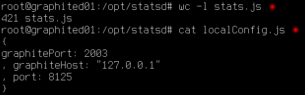Starting StatsD
node /opt/statsd/stats.js /opt/statsd/localConfig.js 2>&1 >> /var/log/statsd.logGotchas
- Retention Rate and Flush Interval
- Storage Aggregation and Downsampling
- UDP vs. TCP Port
- Metrics Names
- Two Entries for Counters
Retention Rate / Flush Interval
The smallest retention rate in Graphite must match the Flush Interval in StatsD
storage-schemas.conf
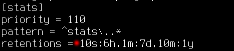
localConfig.js
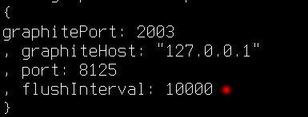
Downsampling
- Graphite averages downsamples by default
- You should use averages for gauges and timers, but sums for counters
storage-aggregation.conf
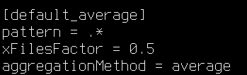
Send To The Right Port
- StatsD has a separate TCP and UDP Listening Process
- Don't forget the 'u' flag in netstat -utlnp
Two Entries for One Counter
- stats.countername normalizes the flush interval
- stats_counts.countername is the total count received within the flush interval
- Set ^stats_counts\..* to aggregationMethod = Sum